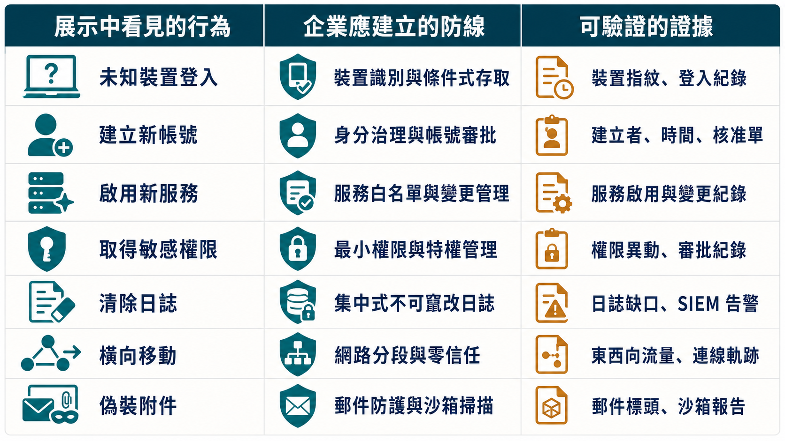

從惡意程式展示看見真正的防線：端點、日誌、檔案與網路分段
課程定位：Day1 下午實作與架構討論，講師許晉銘。以受控環境展示行動裝置與 Windows 主機遭控制後可能發生的行為，再回推防禦、蒐證與網路架構設計。
攻擊展示最容易留下兩種錯誤印象。第一種是「工具太厲害，反正防不了」；第二種是「我把工具名稱記下來，以後看到它就安全」。但攻擊工具可以改名、換版本、改走不同路徑，真正穩定的防守方式，是理解它需要哪些條件：入口、網路資訊、執行權限、持久性、橫向路徑與對外通訊。
這堂實作的價值，不在複製講師的操作，而在把每個攻擊階段反轉成防禦問題：哪一步能最早被阻擋？哪一個行為應留下告警？哪一段網路若切開，災害就不會擴大？
摘要
這篇導讀從行動裝置與 Windows 主機的受控展示出發，說明攻擊工具可以改名換版本，真正該記住的是它需要哪些條件：權限、環境資訊、持久性、橫向路徑與對外通訊。文章談到 App 權限與 IoT 裝置如何成為資料載體、攻擊者取得環境資訊後如何決定下一步、越早攔截代價越低但也越難管理、新帳號與新服務應被視為即時事件而非稽核欄位、日誌需集中保存以免被清除、無檔案式攻擊與偽裝檔案的技術限制與防禦重點，最後談 VLAN 分段、委外連線與 AD／郵件／事務機等常見弱點，並提供一張把攻擊行為對照企業防線與驗證證據的總表。
受控展示不是攻擊教學，而是讓風險變得具體
課程在測試用 Android 裝置與老舊 Windows XP 環境中展示惡意程式。講師刻意不提供完整攻擊製作流程，也提醒未經授權存取他人設備可能觸法。
這個界線很重要。企業可以在自有、隔離、經授權的實驗環境中理解攻擊技術；不能因為工具公開或出於「研究」，就把別人的手機、帳號或公司系統當成測試目標。
導讀因此保留防禦意義，不重製可直接用來入侵、竊取憑證或隱匿惡意內容的逐步指令。
一個 App 權限提示，背後可能是整組資料能力
行動裝置展示讓學員看到，惡意 App 一旦獲得權限並建立控制通道，可能接觸相機、麥克風、簡訊、通訊錄、位置與其他裝置資料。使用者看到的畫面可能很少，背景行為卻完全不同。
這提醒企業不要只看 App 名稱或單一權限文字，而要建立幾個基本原則：
- 只從核准來源安裝軟體，確認開發者與簽章。
- App 要求的權限應與功能合理相稱。
- 公司裝置不要開放側載未知 APK 或繞過安全檢查。
- 財務、人資、研發或高階主管裝置應有更嚴格的行動裝置管理。
- 相機、麥克風、位置與通訊錄等敏感權限應定期檢查。
物理遮罩可以降低鏡頭被濫用時的影像暴露，但它不是完整行動安全方案。麥克風、簡訊、位置、帳號權杖與雲端同步仍需要系統權限、更新、裝置管理與異常監控。
手機、手錶、行車記錄器與 IoT 都是資料載體
課程把視野從電腦擴展到手機、智慧電視、CCTV、穿戴裝置、掃地機器人與多功能事務機。這些設備可能記錄位置、影像、通訊、列印內容或網路憑證，也可能因為預設密碼、過期韌體與不必要服務成為入口。
中小企業常漏掉的不是大型伺服器，而是「沒有人覺得它算電腦」的設備。資產盤點至少要記錄：
| 項目 | 要知道的事情 |
|---|---|
| 擁有者 | 哪個部門負責？誰能核准變更？ |
| 網路位置 | 接在哪個區段？能連到哪些服務？ |
| 管理方式 | 是否仍使用預設帳密？由誰更新？ |
| 資料類型 | 儲存或傳送影像、文件、位置還是帳號？ |
| 生命周期 | 廠商是否仍提供韌體與安全更新？ |
裝置來源國或品牌大小，不能單獨作為安全判斷。更可靠的採購條件是更新承諾、漏洞回應、資料流向、預設設定、管理能力與供應鏈透明度。
攻擊鏈的第一步，通常是取得環境資訊
在 Windows 示範中，攻擊者會先了解網路、主機、帳號與可用服務，再決定後續動作。從防禦角度看，這意味著企業要減少不必要的資訊暴露。
課程提到幾個可行控制：
- 對網路接入建立裝置與身分管理，避免插上網路孔就取得內部資源。
- 視實際管理需求限制 ICMP 與其他探測流量，不把「全部開放」當預設。
- 定期盤點內網開放的連接埠、網頁與遠端服務。
- 對新服務、新監聽連接埠與異常網路路徑建立告警。
- 一般使用者預設採最小權限，管理操作使用獨立帳號。
關閉 ping 本身不等於安全，攻擊者仍可能透過其他協定發現主機。真正有效的是多層控制：網路接入、分段、防火牆、服務盤點與行為監控共同作用。
圖：從環境偵察到核心目標的典型攻擊路徑，藍色階段最容易低成本攔截，黃色階段需要即時告警，紅色為一旦成立代價最高的核心資產。
越前面攔下，通常代價越低；越前面的控制也越難管理
課程把一連串攻擊步驟逐一問學員：「在哪一步攔最好？」理論上，攻擊者還沒取得 IP、還沒下載工具、還沒提升權限時就被阻擋，損害當然最小。
但越靠前的控制，越需要清楚的資產與正常行為基線。若公司連哪些服務正在使用、哪些設備應接入都不知道，就很難在第一步精準阻擋，只能等到對外連線或端點異常時再處理。
這形成一個務實的成熟度順序：
- 先盤點資產、帳號與服務。
- 收斂不必要權限與對外連線。
- 建立端點與防火牆的基本告警。
- 再逐步推進裝置白名單、細緻分段與行為基線。
不要一開始就追求最複雜控制，卻讓最基本的清冊與維運流程空白。
新帳號、新服務與新檔案，應該是事件，不只是盤點欄位
實作展示說明，攻擊者取得權限後可能建立新帳號，作為之後返回的入口。如果企業只在半年或一年一次的稽核中檢查帳號，這個持久性入口可能存在很久。
比較好的做法是把「建立」與「變更」變成即時可見事件：
- 新增本機或網域帳號。
- 帳號加入管理者群組。
- 建立或修改系統服務。
- 新增排程工作或開機啟動項目。
- 安全性日誌停止、被清除或稽核政策改變。
- 關鍵目錄出現新執行檔或腳本。
告警要搭配變更流程。若 IT 正在進行核准維護，告警應能關聯變更單；若沒有人能說明，就要升級調查。否則告警太多，最後只會全部被忽略。
日誌能重建事件，但不能只留在被害主機上
課程示範攻擊者可以清除本機事件紀錄。這說明一個重要原則：如果所有日誌只留在被控制的主機上，攻擊者取得足夠權限後就可能破壞證據。
企業應把關鍵日誌集中傳送到權限分離的系統，至少包含：
- 成功與失敗登入。
- 帳號及群組權限變更。
- 新服務、排程與程序活動。
- 防火牆、VPN、DNS 與對外連線。
- EDR 或端點防護告警。
- 備份工作、刪除與還原操作。
日誌保存不是越多越好。先從能回答事件問題的資料開始：誰在什麼時間、從哪裡、以什麼身分、對哪個系統做了什麼。
Windows 事件編號的技術校正
逐字稿在口語說明中把 4624 與 4625 的成功、失敗意義說反。依 Microsoft 文件：
- 事件 4624：帳號成功登入。
- 事件 4625：帳號登入失敗。
大量 4625 後接 4624，可能符合密碼猜測成功的型態，但不能只靠這個順序就下結論。服務帳號設定錯誤、舊密碼快取、排程或遠端管理也可能造成大量失敗。調查時要關聯來源 IP、Logon Type、帳號、程序、時間與其他端點行為。
參考：Microsoft Learn：Audit Logon。
無檔案式攻擊藏在記憶體，不代表一定能跨重開機存活
課程強調記憶體與揮發性資料的蒐證價值，方向是正確的：執行中的惡意程序、網路連線、解密金鑰與命令可能只存在記憶體，若直接關機，重要證據可能消失。
但技術上要補充：記憶體是揮發性的。純粹只存在 RAM、沒有其他持久性機制的惡意內容，通常無法直接跨完整重開機存活。所謂無檔案式攻擊若能在重開機後再出現，通常是利用登錄、排程、WMI、腳本、合法工具或其他持久性方法重新載入。
因此事件處理不能把「重開機」當成清除方法，也不能說重開機對所有記憶體型攻擊完全無效。正確做法是由應變人員依情境決定是否先擷取記憶體、網路與程序資訊，再進行隔離或關機。
參考：Microsoft Security：Exposing fileless malware。
檔案看起來像圖片或音樂，不代表內容只有圖片或音樂
課程展示檔案可利用格式特性、壓縮或附加資料，使外觀看起來像一般圖片、Office 文件或音訊。這類技巧可用於合法的資料封裝與研究，也可能被用來藏匿惡意內容。
使用者不應只看副檔名與圖示判斷安全。企業防禦可從幾個面向著手：
- 顯示完整副檔名，避免雙重副檔名誤導。
- 對郵件與下載內容檢查實際檔案型態，而不只看名稱。
- 限制巨集、腳本與不必要的檔案關聯執行。
- 在隔離環境分析不可信附件。
- 用 EDR 觀察檔案開啟後的程序與網路行為。
最值得學的不是如何把檔案藏進另一個檔案，而是理解「內容、外觀與執行行為可能是三件不同的事」。
VLAN 能分區，但不能單獨承擔隔離
小組討論要求學員從網路架構中找出勒索軟體可能的入口與擴散點。多組選擇委外設備、供應商連線、一般使用者區與其他直接接在核心交換器上的節點。
將不同裝置切成 VLAN 是合理起點，因為它能降低同一廣播域內的直接接觸。但 VLAN 只是邏輯分區；若跨區路由仍然全面開放，攻擊者照樣能從一區跳到另一區。
完整分段需要：
- 每個區域有明確業務用途與資產範圍。
- 跨區流量經過防火牆或可稽核的政策控制。
- 預設不互通，只開放必要來源、目的與服務。
- 對高風險區域建立更強的身分與裝置驗證。
- 定期檢查規則是否仍有業務需要。
委外連線：最好能追到人，不只追到公司
逐字稿建議委外維護採「一人一帳號、一人一 IP」的精神。實務上固定 IP 不一定適合所有遠距情境，但核心原則正確：事件發生時，必須能把操作關聯到具名人員、核准時段與工作內容。
可採取的控制包括：
- 每位維護人員使用個別帳號，不共用廠商帳密。
- 透過 VPN、跳板機或零信任存取平台進入。
- 使用 MFA，並限制可維護的系統與服務。
- 只在核准時段開通，結束後自動失效。
- 記錄連線、命令或重要操作，並與工單關聯。
- 廠商人員異動時立即撤銷權限。
供應商的資安水準若低於企業本身，委外通道就可能成為整體防線的最低點。
郵件、事務機與 AD：最常見、最不起眼與最核心
電子郵件是社交工程常見入口，但不能只把責任推給點擊的人。附件與連結可經過郵件防護、沙箱、DNS 過濾與端點偵測；高風險族群也可採更嚴格保護。
多功能事務機則常因為功能多、韌體老舊、帳密未改而被遺漏。該關的服務應關閉，管理介面應限制在管理網段，列印或掃描資料的保存方式也要檢查。
AD 或其他身分核心通常是攻擊者的重要目標，因為控制身分就可能控制大量主機與權限。企業要特別監控誰能接觸 AD、管理群組如何變更，以及一般服務帳號是否擁有過大權限。
一張防禦對照表：把展示轉成企業行動
| 展示中看見的行為 | 企業應建立的防線 | 可驗證的證據 |
|---|---|---|
| 未知裝置進入內網 | 網路接入控制、分區、裝置清冊 | 未核准裝置會被隔離 |
| 建立新帳號 | 即時告警、個別管理帳號 | 建帳事件能關聯工單 |
| 開啟新服務 | 服務基線、端點監控 | 未核准服務會觸發調查 |
| 取得敏感裝置權限 | MDM、權限最小化、核准 App | 權限異動可被查詢 |
| 清除本機日誌 | 集中日誌、權限分離 | 中央端仍保有副本 |
| 橫向移動 | VLAN、跨區防火牆、身分驗證 | 非必要路徑預設被拒絕 |
| 偽裝附件 | 檔案型態檢查、隔離分析、EDR | 可疑附件不直接在正式端點執行 |

攻擊展示的終點，不應是「原來駭客可以做這麼多」。真正的終點，是企業能指出攻擊鏈中的兩到三個位置，明確說出目前如何阻擋、如何看見，以及失敗後如何恢復。
結論
這場受控展示的重點，從來不是記住某個工具的名字，而是理解攻擊需要哪些條件才能成立：入口、環境資訊、執行權限、持久性、橫向路徑與對外通訊。企業若能針對每個條件建立對應防線——裝置與權限管理、資產盤點、告警與集中日誌、VLAN 與跨區防火牆、委外連線的個人化課責——就能把攻擊鏈拆成多個可觀測、可阻擋的步驟。呼應文章開頭的提問：越早攔下代價越低，但也越依賴清楚的資產盤點與正常行為基線。企業不需要一開始就追求最複雜的控制，而是先把清冊、權限收斂與基本告警做扎實，再逐步推進裝置白名單、細緻分段與行為監控，讓「原來駭客可以做這麼多」變成「我們知道在哪幾步能攔住它」。
來源與閱讀說明
- 課程影片：115年中小企業基礎資安培訓課程｜第二期 Day1
- 完整逐字稿：HackMD 課程逐字稿
- 技術校正：Microsoft Learn：Audit Logon
- 技術校正：Microsoft Security：Exposing fileless malware
本文以防禦與事件應變為目的重組逐字稿，省略可直接用於未授權入侵、憑證竊取或隱匿惡意內容的操作細節。